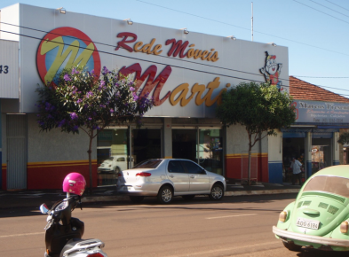

Em meados da década de 70, o Sr. Martins trabalhava arduamente como gerente de uma das lojas da linha Pernambucanas, dedicando-se dia após dia para garantir seu espaço no mercado e o sustento de sua família. Durante alguns de seus dias mais corridos, o Sr. Martins costumava buscar seu filho Adriano, 10, na escola e o levava para acompanha-lo no trabalho a fim de terem um momento entre pai e filho.
Durante estas visitas, o jovem Adriano iria despender seu tempo conversando com os vendedores e atraindo clientes da rua para a loja com sua empolgação e energia. Com o tempo, Adriano passou a criar gosto pelo negócio, embora sua vontade em perseguir está carreira fosse aparecer muito no futuro.
Apesar do encanto pelo comércio desenvolvido quando criança, Adriano Martins decidiu tomar um caminho mais seguro. Formado em Administração, pela Universidade Estadual de Londrina, o futuro empreendedor começou sua carreira atuando em bancos.
Porém, dia após dia o desconforto crescia, e Adriano se via almejando algo mais, um desejo antigo reaparecendo em sua vida durante seus monôtonos momentos dentro de seu cubículo no banco. Apesar da estabilidade, do bom salário e do renome de sua posição, o desejo falou mais forte.
Acesse o nosso eBook para ler a história completa.
Assista o vídeo da entrevista completa

Como todo inicio de negócio, a realidade não atendeu as expectativas, após investirem todo o dinheiro que haviam juntado para abrir o negócio, a falta de capital de giro começou a cobrar seu preço. Dividas eram cada vez mais recorrentes, empréstimos em bancos e de amigos foram necessários para que a empresa pudesse continuar seu funcionamento.
Na época, a inflação mensal era altíssima a crise econômica se instalava no país, dificultando a estabilidade nas finanças da empresa, ao ponto em que os 3 pensaram em fechar a empresa. Mas tudo mudou no dia 16 de março de 1990, um dia depois da posse do presidente Fernando Collor de Mello, quando, no auditório do Ministério da Fazenda, em Brasília, ela e dezenas de repórteres participaram de uma coletiva com a equipe econômica do novo governo, o primeiro eleito pelo voto direto depois de quase 30 anos. Nesta coletiva o ministério da fazenda anunciava um novo plano econômico, que para muitos seria devastador, mas foi a salvação da Móveis Martins.
O governo congelou as dividas e poupança da população, apenas transferência para pagar dívidas era permitido, como uma forma de conseguir transferir dinheiro, varias pessoas procuraram a empresa para poder comprar móveis para que o dinheiro não ficasse congelado, e nessa a empresa teve um grande volume de vendas que foi o suficiente para poder sair de vermelho e readequar sua situação financeira.
Acesse o nosso Paper para ler a continuação.
A companhia antes falida, hoje é destaque regional como a maior e mais variada loja no segmento de Móveis, Colchões, Eletrodomésticos, Eletrônicos, Informática e Celulares, atendendo os clientes de Londrina e região com crediário próprio, entrega rápida e garantia de 1 ano em todos os produtos.
Adriano emprega hoje mais de 20 pessoas as quais se recusou a dispensar durante o período de pandemia. A companhia hoje está migrando para o mercado digital de modo a expandir seu mercado e contrabalancear a queda de vendas devido a pandemia. A estratégia vem funcionando, uma vez que Adriano alega ter batido recorde de vendas durante o período de 2020.